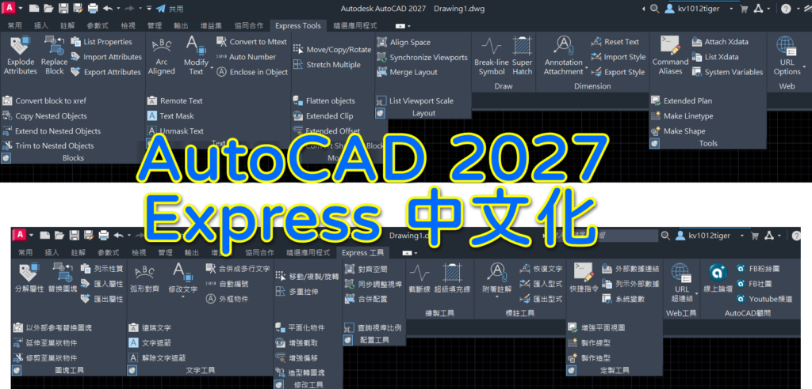

✨✨✨BEX 批次智慧擷取 跨圖檔算圖神器 👉 詳全文...(點我) 👈

大家好：
這回整理了「AutoCAD 2027 Express繁體中文化」！
請幫忙分享論壇給需要的人，讓我們幫助更多人喔～
※截止時間：2026年08月08日 18時0分
記得分享給你的朋友喔
2027 Express繁體中文化取得方式：
⭐👉想要下載請 "留言+按讚+分享" 👈
⭐下載鏈接 (2026/09/01截止)👇👇👇
https://www.swisstransfer.com/dl/019fcb71-125f-714e-a4c6-f3d2b99b30b8
解壓密碼：AutoCAD顧問_2027ExpressC
註1：Express Tools 是 AutoCAD 原廠附贈的外掛程式，必須先安裝「 AutoCAD 主程式」預設的「英文版 EXPRESS 」，才可以安裝本中文化版程式。
註2：此中文化僅支援AutoCAD版本，並無支援mechanical版本(或其他版本)。
■AutoCAD 2027 Express中文化版本下載（下載權限專屬B會員）：
👇專屬B會員直接前往下載
https://www.autocad-tw.com/t30613-topic
解壓密碼：AutoCAD顧問_2027ExpressC
※👇進階學習如何自行掛入可參考私房教學1課程※
https://autocad-tw.1shop.tw/wv66rj
※操作教學：AutoCAD Express中文化版※
https://www.autocad-tw.com/t6523-topic
延伸閱讀主題：
Express Tools 中文化版本整理_(閱讀權限：初級會員(積分1))